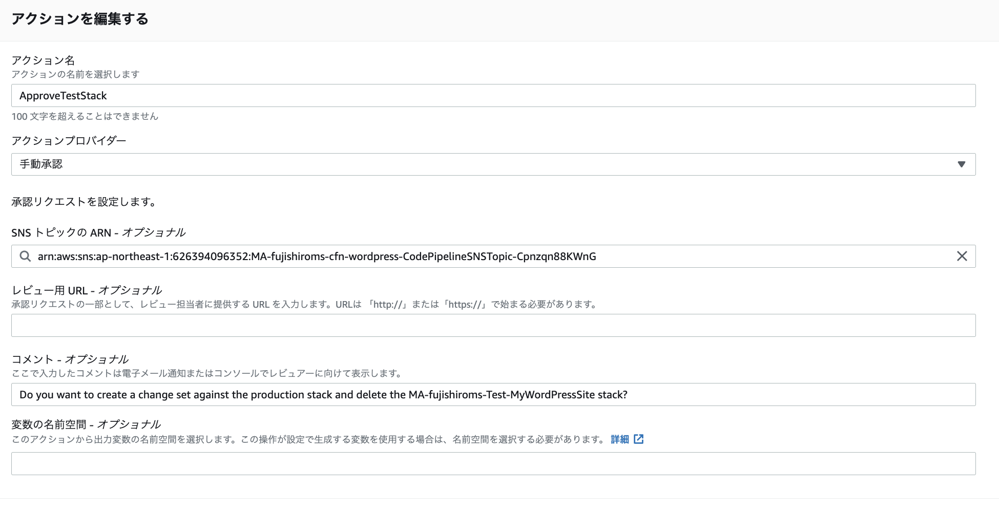

1. CodePipelineを利用してCFNのCICD環境を作成する¶
1.1. デプロイステージについて¶
デプロイステージとして以下2つの選択肢がある
CloudFormation
CloudFormation スタックセット
CloudFormationのスタックセットは、別リージョンや複数のAWSアカウントにデプロイする機能なので、今回はCloudFormationを利用することになるはず
1.1.1. CloudFormationの設定項目：アクションモード¶
アクションモードとして以下が選択できる
スタックを作成または更新する
新規のスタックを作成するか、すでにスタックがあれば、更新を行う。スタックを削除する
指定されたCFNスタックを削除する故障したスタックを取り替える
新規で作成するスタックの作成に失敗した場合に、更新前のスタックに自動で戻る。新しいスタックの削除などを自動で行うため、試行錯誤に向いている変更セットを作成または更新する
指定されたCFNスタックに対する変更セットを作成、更新する
このアクションにより、変更をスタックに反映する前に、変更の影響を予測し、評価するために使用される。変更セットを実行する
指定されたCFNスタックに対する変更セットを実行する
変更を実際に反映するためのアクション
1.1.2. CloudFormationの設定項目：スタック名¶
設定項目は以下
スタック名
作成する場合は作成されるスタック名を意味する 更新する場合は更新対象のスタックを意味するテンプレート
1.1.3. CloudFormationの設定項目：権限¶
AWS CloudFormationがスタックを作成するために、スタックテンプレートに特定の機能が含まれていることを明示的に確認する必要があり、その設定を行う。 CloudFormationを使用するにはIAMユーザーやロールに必要な権限を付与する必要がある。 アクションに必要な権限は”能力(CAPABILITY)”というパラメータで付与する
設定項目は以下
CAPABILITY_IAM
CFNがIAMリソースを作成・変更できるようにするCAPABILITY_NAMED_IAM
CFNが指定されたIAMリソースを作成または、変更できるようにする（作成するスタックの中にカスタム名のIAMリソースを含めることができる）CAPABILITY_AUTO_EXPAND
CFNがテンプレート内で、複数のネストされたAppが含まれる場合に指定するらしい
1.2. チュートリアルをやってみる¶
テストおよび本稼働スタック用のパイプラインを構築するをやってみる
最終的に3つのステージが完成する
リポジトリからソースアーティファクトを取得して、S3バケットにアップロードする
テストスタックを作成して、実行か追加変更かを選べる。承認プロセスも含む
本番スタックに対する変更セットを作成して、承認を待ち、承認後に変更が実行される
1.2.1. IaCの基本¶
登場人物
リポジトリ：gitなどコードを管理する場所
IaCコード：実際のコード
アーティファクトストア：IaCのコードなどを保管する
1.2.2. 事前準備¶
ネットワークに接続できるEC2を作成しておく（IGWが取り付けられたpublic subnetに所属しているEC2）。
パブリックサブネットにEC2を作成してキーペアを保存しておく
バージョニングが有効かされたS3を作成しておく
1.2.3. ステップ１：コードを修正してS3にアップロードする¶
今回、アーティファクトストアにはS3を利用する。 S3を利用する場合、ソースファイルをzipファイルに変換してから、S3にコピーをする。
チュートリアルではワードプレスを作成するアーティファクトファイルが事前に準備されているので構成ファイル内のKeyNameをEC2で利用したキーペア名に変更しておく
wordpress-single-instance.yaml:WordPress用のCFnコード
test-stack-configuration.json:テスト用構成ファイル
prod-stack-configuration.json:本番用構成ファイル
CFnのzipファイルをアップロードする
1.2.4. ステップ2:パイプラインスタックを作成する¶
CFNの画面から、チュートリアルにある、CICDを構成するCFNコードをアップロードして、実行する。
CFNコードでは最初に設定するパラメータについて定義している。 パラメータセクションで定義された変数は、CFNを実行する最初にコンソールから入力を求められる。
Parameters:
PipelineName:
Description: A name for pipeline
Type: String
S3Bucket:
Description: The name of the S3 bucket that contains the source artifact, which must be in the same region as this stack
Type: String
SourceS3Key:
Default: wordpress-single-instance.zip
Description: The file name of the source artifact, such as myfolder/myartifact.zip
Type: String
TemplateFileName:
Default: wordpress-single-instance.yaml
Description: The file name of the WordPress template
Type: String
TestStackName:
Default: Test-MyWordPressSite
Description: A name for the test WordPress stack
Type: String
TestStackConfig:
Default: test-stack-configuration.json
Description: The configuration file name for the test WordPress stack
Type: String
ProdStackName:
Default: Prod-MyWordPressSite
Description: A name for the production WordPress stack
Type: String
ProdStackConfig:
Default: prod-stack-configuration.json
Description: The configuration file name for the production WordPress stack
Type: String
ChangeSetName:
Default: UpdatePreview-MyWordPressSite
Description: A name for the production WordPress stack change set
Type: String
Email:
Description: The email address where CodePipeline sends pipeline notifications
Type: String
スタック名設定
パイプラインに関するパラメータ設定

設定ファイルに関するパラメータ設定
CFNコードでは、上記のパラメータ入力画面の制御をMetadataセクションのInterfaceで行なっている
Metadata:
AWS::CloudFormation::Interface:
ParameterGroups:
- Label:
default: "CodePipeline Settings"
Parameters:
- PipelineName
- S3Bucket
- SourceS3Key
- Email
- Label:
default: "Test Stack Settings"
Parameters:
- TestStackName
- TemplateFileName
- TestStackConfig
- Label:
default: "Production Stack Settings"
Parameters:
- ChangeSetName
- ProdStackName
- ProdStackConfig
1.2.4.1. 必要なリソースの作成¶
Artifactを格納するS3バケット（ArtifactStoreBucket）とSNS Topic(CodePipelineSNSTopic)を作成している
Resources:
ArtifactStoreBucket:
Type: AWS::S3::Bucket
Properties:
VersioningConfiguration:
Status: Enabled
CodePipelineSNSTopic:
Type: AWS::SNS::Topic
Properties:
Subscription:
- Endpoint: !Ref Email
Protocol: email
また、CodePipelineに対して付与するIAM Role(PipelineRole)を作成している。
PipelineRole:
Type: AWS::IAM::Role
Properties:
AssumeRolePolicyDocument:
Statement:
- Action: ['sts:AssumeRole']
Effect: Allow
Principal:
Service: [codepipeline.amazonaws.com]
Version: '2012-10-17'
Path: /
Policies:
- PolicyName: CodePipelineAccess
PolicyDocument:
Version: '2012-10-17'
Statement:
- Action:
- 's3:*'
- 'cloudformation:CreateStack'
- 'cloudformation:DescribeStacks'
- 'cloudformation:DeleteStack'
- 'cloudformation:UpdateStack'
- 'cloudformation:CreateChangeSet'
- 'cloudformation:ExecuteChangeSet'
- 'cloudformation:DeleteChangeSet'
- 'cloudformation:DescribeChangeSet'
- 'cloudformation:SetStackPolicy'
- 'iam:PassRole'
- 'sns:Publish'
Effect: Allow
Resource: '*'
1.2.4.2. パイプラインの作成¶
CFNコードでCodePipelineを作成する。 まずは、CodePipelineで作成されるArtifactの格納場所であるArtifactStoreを定義する。S3を利用する宣言と、バケットを指定する。 バケットは事前に作成したArtifactStoreBuckerを利用する。
Roleに関してもCFNで定義しているものを利用する
Pipeline:
Type: AWS::CodePipeline::Pipeline
Properties:
ArtifactStore:
Location: !Ref 'ArtifactStoreBucket'
Type: S3
DisableInboundStageTransitions: []
Name: !Ref 'PipelineName'
RoleArn: !GetAtt [PipelineRole, Arn]
1.2.4.3. ソースステージの作成¶
ソースステージでは、S3に置かれているCFNコードを参照できるように、参照先のS3を定義する。 事前にCFN作成時にパラメタで指定したバケットとパスを使って、今回の対象となるCFNコードのzipがどこにあるかを定義。
本ステージの出力としてTemplateSourceを指定しているので、別ステージでもこのソースコードを参照できるようになる。

このステージを作成するCFNコードは以下
- Name: S3Source
Actions:
- Name: TemplateSource
ActionTypeId:
Category: Source
Owner: AWS
Provider: S3
Version: '1'
Configuration:
S3Bucket: !Ref 'S3Bucket'
S3ObjectKey: !Ref 'SourceS3Key'
OutputArtifacts:
- Name: TemplateSource
1.2.4.4. テストステージの作成¶
テストステージは3つのステージに分割され、スタックを作成して、確認が終われば、スタックを削除する。
スタックを作成する(CreateStack)
承認する(ApproveTestStack)
スタックを削除する(DeleteTestStack)
まず、CreateStackではスタックを作成します。
ここでは、故障したスタックを取り替える（REPLACE_ON_FAILURE）というアクションタイプを指定する。これにより、指定されたスタックが存在しない場合、スタックを作成します。スタックが存在しており、失敗状態の場合、そのスタックを削除して新しいスタックを作成します。
作成されたスタックとリソースを次の承認ステージでユーザーに確認してもらう。

- Name: TestStage
Actions:
- Name: CreateStack
ActionTypeId:
Category: Deploy
Owner: AWS
Provider: CloudFormation
Version: '1'
InputArtifacts:
- Name: TemplateSource
Configuration:
ActionMode: REPLACE_ON_FAILURE
RoleArn: !GetAtt [CFNRole, Arn]
StackName: !Ref TestStackName
TemplateConfiguration: !Sub "TemplateSource::${TestStackConfig}"
TemplatePath: !Sub "TemplateSource::${TemplateFileName}"
RunOrder: '1'
次に、ApproveTestStackでは、手動承認アクションを準備し、SNSを利用して承認確認メールを送信する。ユーザーは前のステージで作成されたスタックとリソースを確認する。

- Name: ApproveTestStack
ActionTypeId:
Category: Approval
Owner: AWS
Provider: Manual
Version: '1'
Configuration:
NotificationArn: !Ref CodePipelineSNSTopic
CustomData: !Sub 'Do you want to create a change set against the production stack and delete the ${TestStackName} stack?'
RunOrder: '2'
最後に、DeleteTestStackでは、作成されたスタックを削除する。 テストステージではリソースを残さずに、確認が終わったら、削除する。

- Name: DeleteTestStack
ActionTypeId:
Category: Deploy
Owner: AWS
Provider: CloudFormation
Version: '1'
Configuration:
ActionMode: DELETE_ONLY
RoleArn: !GetAtt [CFNRole, Arn]
StackName: !Ref TestStackName
RunOrder: '3'
1.2.4.5. 本番ステージの作成¶
本番ステージは以下は3つのステージに分割され、既存の本稼働スタックに対する変更セットを作成し、承認を待ってから、変更セットを実行します。
変更スタックを作成する(CreateChangeSet)
承認する(ApproveChangeSet)
変更スタックを適用する(ExecuteChangeSet)
まず、CreateChangeSetでは、変更スタックを作成する。
ActionModeは変更セットを作成または交換する（CHANGE_SET_REPLACE）というアクションタイプを指定する。これにより、変更セットが存在しない場合、指定されたスタック名とテンプレートに基づいて変更セットを作成します。変更セットが存在する場合は、AWS CloudFormation はそれを削除して新しいものを作成します。

- Name: ProdStage
Actions:
- Name: CreateChangeSet
ActionTypeId:
Category: Deploy
Owner: AWS
Provider: CloudFormation
Version: '1'
InputArtifacts:
- Name: TemplateSource
Configuration:
ActionMode: CHANGE_SET_REPLACE
RoleArn: !GetAtt [CFNRole, Arn]
StackName: !Ref ProdStackName
ChangeSetName: !Ref ChangeSetName
TemplateConfiguration: !Sub "TemplateSource::${ProdStackConfig}"
TemplatePath: !Sub "TemplateSource::${TemplateFileName}"
RunOrder: '1'
承認プロセス(ApproveChangeSet)を設け、最後に変更セットの実行(ExecuteChangeSet)を行う。事前にパラメタとして設定したChangeSetNameを利用して変更セットの実行を行う。

- Name: ExecuteChangeSet
ActionTypeId:
Category: Deploy
Owner: AWS
Provider: CloudFormation
Version: '1'
Configuration:
ActionMode: CHANGE_SET_EXECUTE
ChangeSetName: !Ref ChangeSetName
RoleArn: !GetAtt [CFNRole, Arn]
StackName: !Ref ProdStackName
RunOrder: '3'